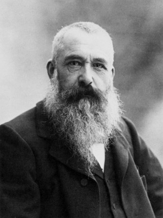

(Claude Oscar Monet; París, 1840 - Giverny, 1926) Pintor francés, figura clave del movimiento impresionista. Sus inclinaciones artísticas nacieron del contacto con Eugène Boudin en Le Havre, y las excursiones al campo y la playa durante su adolescencia orientaron el posterior desarrollo de su pintura.
Después del servicio militar en Argelia, regresó a París, donde en el estudio de Gleyre conoció a jóvenes artistas como Renoir, Sisley y Bazille, y en el popular café Guerbois contactó con un grupo de intelectuales, literatos y pintores como Émile Zola, Nadar, Cézanne y Degas, que junto con Manet comenzaban a oponerse al arte establecido.
La pintura rápida como las pochades o études era, en aquella época, del agrado de la sociedad siempre que ésta se circunscribiera al tema del paisaje en pequeño formato. La temprana obra de Monet, La costa de Sainte-Adresse (1864, Institute of Arts, Minneapolis), recuerda a su iniciador, Boudin, pero adquiere mayor alcance al aplicar la pintura directa a temas y formatos de mayor complejidad y tamaño.
Similar innovación puede apreciarse en Mujeres en el jardín (1866, Museo de Orsay, París), obra rechazada en el Salón de 1867, en la que tres mujeres se divierten en el campo bajo un sol tan intenso que sus vestidos alcanzan el blanco en estado de gran pureza, con escasas modulaciones intermedias y marcadas escisiones entre las zonas de luz y sombra. La instantaneidad de la escena se pone de manifiesto tanto por la precisión luminosa del momento como por el dinamismo de las figuras, correteando y girando caprichosamente alrededor de un árbol. Con esta ambiciosa obra, Monet se aleja del tratamiento tradicional que hasta entonces se dio al retrato -el retrato de su primera mujer, Camile, había sido ensalzado por Zola en el Salón de 1866- y se inclina por la integración de las figuras en la naturaleza.
Los serios problemas económicos y el nacimiento de su hijo ilegítimo, Jean, en 1867, condujeron a Monet a vivir una época de hambre y pobreza extremas, así como a un intento frustrado de suicidio. Durante la contienda franco-prusiana, el artista se refugió en Inglaterra, donde conoció a Pissarro y obtuvo el apoyo económico y la amistad de Paul Durand-Ruel. Allí se interesó mucho por la obra de Turner, que tanto influiría en su percepción de la luz y el color. Según Monet, el pintor que se coloca ante la realidad no debe hacer distinciones entre sentido e intelecto.
A partir de 1872, Monet se interesó por el estanque de Argenteuil como lugar idóneo para adaptar su técnica a la representación rápida del agua y la luz. La obra titulada Monet trabajando en su barco en Argenteuil (1874, Neue Pinakothek, Munich) representa esa especie de laboratorio náutico desde el que el artista podía navegar sobre el agua del estanque apreciando los cambiantes efectos luminosos de su superficie, que reproducía mediante diversas variaciones sobre un mismo tema. El barco-taller de Monet se oponía radicalmente a la idea de estudio que veinte años antes exaltaba Courbet en su obra El estudio del pintor, y suponía un pintoresco testimonio de las principales aspiraciones impresionistas.
A partir de 1890 la pintura de Monet se vuelve más compleja y la inmediatez y la euforia iniciales se transforman en insatisfacción y melancolía, en un difícil intento por conciliar la técnica fresca y expresiva de sus primeros años con búsquedas más profundas y ambiciosas que podían prolongarse durante varios días, meses e incluso años, con la intención de crear obras que encerraran una mayor complejidad: variaciones que en su reiteración temática permitieran enfatizar la investigación de las resoluciones formales. Efecto de nieve (1891, National Gallery of Scotland, Edimburgo), Almiares (1891, Museo de Orsay, París) y Almiares, puesta de sol (1890-1891, The Art Institute, Chicago) son obras que forman parte de algunas de sus primeras series.
Durante los últimos treinta años de su existencia, el artista trabajó en torno a su jardín de agua de Giverny. En un prado vacío por el que pasaba un pequeño arroyo construyó un exuberante jardín en el que un gran estanque, colmado de nenúfares de todos los colores y rodeado por sauces y árboles exóticos, se cruzaba por un pequeño puente, de forma ovalada, que aparecería en numerosas pinturas de la época, como en El estanque de las ninfeas (1900, Museo de Orsay, París) o la lírica composición titulada El puente japonés (1918-1924, Museo de Orsay, París).